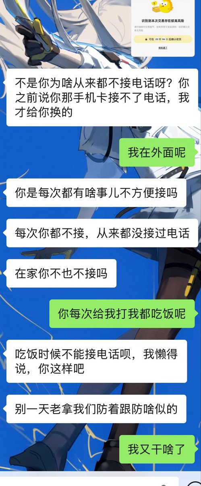
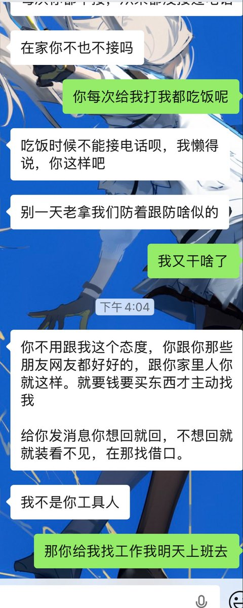
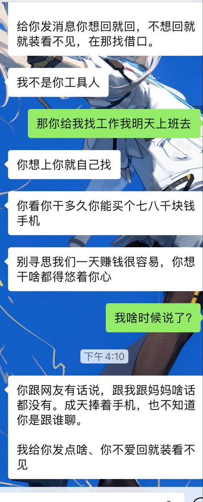
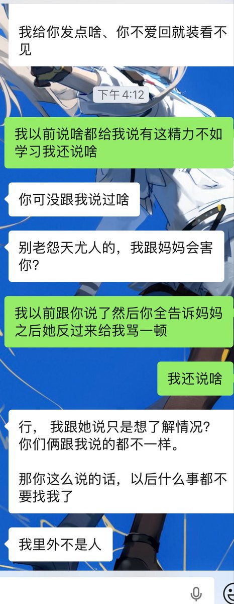

AZ.
@crossyangshe
@index_ourFusion az已经放弃和家里人沟通了，如果家里人真的有本事的话，也不会生出一个精神病出来




index
@index_ourFusion
到底是谁答应我考完给我钱，考完说出分给钱，出分了说收到录取通知书再给我钱，
不知道是谁高三的时候答应我一堆东西现在又装傻不知道
更不知道是谁在我初中的时候先提的让我留学然后就很自以为是地觉得是我想留学并一直以此要挟我，真高考完了又跟我说家里没钱不一定供得起，说我想学日语是三分钟热度 https://t.co/YhvshJXrZo